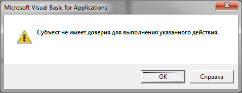

Субъект не имеет доверия для выполнения указанного действия
Недавно столкнулся с ситуацией, когда в присланном файле не обнаружил на пользовательских формах(UserForms) элементов RefEdit.
Кто не в курсе, данный контрол предназначен для указания диапазона ячеек. По умолчанию он отсутствует в стандартном наборе контролов на форме Toolbox, но его легко добавить: Tools- Additional Controls- RefEdit(или RefEdit.Ctrl)
Естественно, формы в файле не работали должным образом и при вызове выдавали ошибку, ругаясь на отсутствие контрола. Я лично грешу, что произошло это у меня после обновления офиса до версии RU-EN(ранее была только RU). Странно все это, конечно. Если бы это было ошибкой библиотеки контрола - была бы хоть какая-то ошибка при запуске проекта(как правило "Could not load an object because it is not available on this machine"). Поэтому я решил удалить старый контрол RefEdit из Tollbox и добавить его заново. И, о чудо! Ничего не случилось. Контрол есть в Toolbox, но нет в файле. Что интересно - при попытке самому добавить на любую форму данный контрол появлялось сообщение "Субъект не имеет доверия для выполнения указанного действия":

Первое, что я сделал, это посмотрел в реестре, зарегистрирован ли данный компонент и все ли там на месте. Я использовал утилиту "oleview" от Microsoft, которая позволяет просмотреть все компоненты на ПК. В реестре он присутствовал и вроде все регистрационные данные были верными. Тогда я скопировал его CLSID и решил посмотреть есть ли он среди доверенных компонентов ActiveX в ветках реестра:
HKEY_CURRENT_USER\SOFTWARE\Policies\Microsoft\Office\Common\Security
HKEY_CURRENT_USER\Software\Microsoft\VBA\Security
Вроде бы все нормально. Зашел до кучи в эти ветки:
HKEY_LOCAL_MACHINE\SOFTWARE\Microsoft\Internet Explorer\ActiveX Compatibility\
HKEY_LOCAL_MACHINE\SOFTWARE\Microsoft\Office\Common\COM Compatibility\
Изначально там было значение 400. Заменил на 0. Ничего не поменялось, ошибка не исчезла.
Потратив еще часок на это недоразумение меня посетила мысль начать с самого простого: настройки Excel(Excel 2010). Я зашел в:
Файл -Параметры -Центр управления безопасностью -Параметры центра управления безопасностью -Параметры ActiveX
в Excel 2007 этот параметр расположен в:
Меню -Параметры Excel -Центр управления безопасностью -Параметры центра управления безопасностью -Параметры ActiveX
и установил "Запрос перед включением всех элементов управления с минимальными ограничениями". Можно так же установить "Включить все элементы управления без ограничений и запросов".
И вот тогда все заработало. Как же оказывается все просто. А я, дурак, лез в реестр, искал, копошил, сверял...Хотя, надо сказать в свое оправдание, что было уже такое, когда Microsoft выпустила обновление системы KB960715. Некоторые контролы вели себя таким же образом после данного обновления и устранить можно было только через реестр. Кстати, для Excel 2003 эта проблема решается вообще только через правку реестра(HKEY_LOCAL_MACHINE\SOFTWARE\Microsoft\Office\Common\Security - установить параметр UFIControls в 6, а параметр DisableAllActiveX - 0). Более подробно про правку реестра для Excel 2003 можно почитать на офф.сайте Microsft - http://support.microsoft.com/kb/827742
Надеюсь, эта статья поможет еще кому-нибудь для решения данной проблемы.